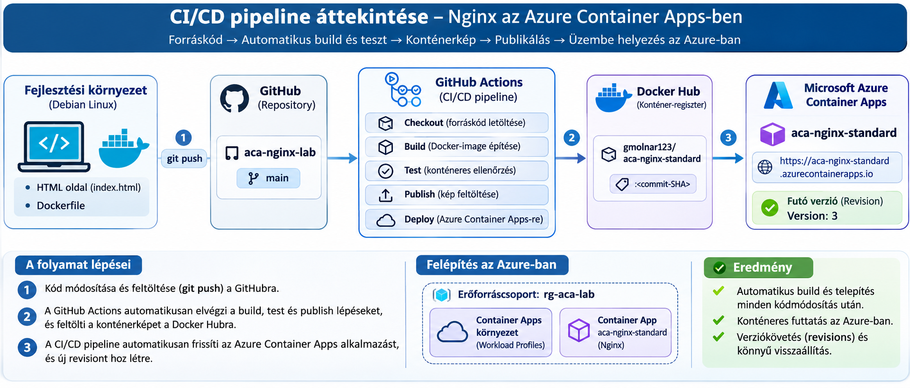

9. hét – DevOps, CI/CD, GitHub Actions és Azure Container Apps
15 feladat · Debian VM / GitHub / Docker Hub / Azure Portal
Órai idő: 90 perc. A be nem fejezett feladatok otthon folytathatók. A munkafüzetben 15 egymásra épülő feladat található. A válaszmezők automatikusan mentődnek ebben a böngészőben; a lap alján Beadás és JSON export érhető el. Képernyőkép nem szükséges. Jelszót, hozzáférési tokent, privát kulcsot és GitHub Secret-értéket soha ne másolj a válaszmezőkbe! Beadási határidő: 2026. november 26. (csütörtök), 11:40 (magyar idő).
Neptun-kód (kötelező, 6 karakter):
A gyakorlat célja – egy működő CI/CD pipeline

A feladat végére: a Debian VM-en módosított index.html fájl git push után automatikusan új Docker-image-ként publikálódik, majd frissül az Azure Container Apps webalkalmazás. Az ábrán szereplő felhasználó- és erőforrásnevek példák: mindenki a saját GitHub- és Docker Hub-fiókját használja.
CI (Continuous Integration): a kódváltozás automatikus ellenőrzése, buildelése és tesztelése. CD (Continuous Deployment): a sikeres ellenőrzés után a működő alkalmazás automatikus frissítése. A gyakorlatban a GitHub Actions végzi a munkát; a Debian VM csak a fejlesztés helyszíne.
I. Projekt és helyi Docker-konténer
1. Előkészítés és azonosítók
Platform: Debian VM – SSH terminál; GitHub és Docker Hub böngésző.
Ellenőrizd a Git és Docker elérhetőségét. Hozz létre új, üres aca-nginx-lab nevű GitHub-repositoryt (README és licenc nélkül). Jegyezd fel a saját Docker Hub-felhasználónevedet.
git --version
docker --version
docker info --format '{{.ServerVersion}}'Ha permission denied ... /var/run/docker.sock jelenik meg, ellenőrzésként használd a sudo docker info parancsot. Tartós megoldásként a rendszergazda a felhasználót a docker csoportba veheti; a csoporttagság root-szintű jogosultsággal jár. Ne változtass jogosultságot ellenőrzés nélkül.
2. Nginx weboldal és Dockerfile
Platform: Debian VM – Bash, nano vagy jed.
Hozd létre a projektet, majd az alábbi két fájlt. A Version: 1 feliratot később módosítjuk.
mkdir -p ~/aca-nginx-lab
cd ~/aca-nginx-labindex.html
<!doctype html>
<html lang="en"><head><meta charset="utf-8"><title>ACA Lab</title></head>
<body><h1>Azure Container Apps Lab</h1><p>Version: 1</p>
<p>Deployed from a Docker container.</p></body></html>Dockerfile
FROM nginx:alpine
COPY index.html /usr/share/nginx/html/index.html
EXPOSE 80Ellenőrzés: ls -l és cat Dockerfile.
3. Git inicializálása és első push
Platform: Debian VM – Git; GitHub webes felület.
Inicializáld a repositoryt, készíts első commitot, majd állítsd be a saját GitHub-repositorydat remote-ként.
cd ~/aca-nginx-lab
git init -b main
git add index.html Dockerfile
git commit -m "Initial Nginx app"
git remote add origin https://github.com/GITHUB_USER/aca-nginx-lab.git
git push -u origin mainA GITHUB_USER helyére saját GitHub-felhasználónevedet írd. Ellenőrizd a fájlokat a GitHub Code fülén.
Repository not found: ellenőrizd, hogy a GitHubon létrejött-e a repository, és a git remote -v helyes URL-t mutat-e. fetch first: ha a távoli ágon új commit jelent meg, előbb git pull --rebase origin main, majd git push origin main. Ne használj --force kapcsolót.
4. Docker-image építése
Platform: Debian VM – Docker CLI.
Építsd fel a képet a saját Dockerfile-ból:
cd ~/aca-nginx-lab
docker build -t aca-nginx:v1 .
docker image ls aca-nginxEllenőrzés: szerepeljen az aca-nginx image v1 taggel.
5. Helyi konténerteszt
Platform: Debian VM – Docker CLI, curl.
Indítsd el a konténert, majd ellenőrizd a HTTP-választ és az oldalt:
docker run -d --name aca-nginx-test -p 8080:80 aca-nginx:v1
curl -I http://localhost:8080
curl -s http://localhost:8080 | grep 'Version:'
docker ps --filter name=aca-nginx-testAz ellenőrzés után állítsd le és töröld a tesztkonténert:
docker rm -f aca-nginx-testVálassz másik szabad hostportot, például -p 8081:80, és a curl parancsban is ezt használd. A konténeren belüli Nginx-port továbbra is 80.
II. Docker Hub és Azure Container Apps
6. Docker Hub image publikálása
Platform: Docker Hub webes felület; Debian VM – Docker CLI.
A Docker Hubon hozz létre egy public aca-nginx-lab repositoryt. A saját felhasználóneveddel taggeld és publikáld az image-et:
docker login --username DOCKERHUB_USER
docker tag aca-nginx:v1 DOCKERHUB_USER/aca-nginx-lab:v1
docker push DOCKERHUB_USER/aca-nginx-lab:v1A jelszóbekérésnél Docker Hub Personal Access Token használható. A tokent ne írd a parancsba vagy a munkafüzetbe. A böngészőben ellenőrizd a v1 taget.
A tokent a Docker Hub biztonsági beállításainál lehet létrehozni; a teljes érték csak létrehozáskor másolható ki. A GitHub Actionshez később külön token is használható. A tokent kizárólag jelszómezőbe vagy GitHub Secretbe írd.
7. Azure erőforráscsoport
Platform: Azure Portal – grafikus felület.
Az Azure Portalon válaszd az Azure for Students előfizetést, és hozz létre egy külön erőforráscsoportot, például rg-aca-lab-ABC123 néven (a saját Neptun-kódoddal). Régió: North Europe. A későbbi összes erőforrást ebben a csoportban hozd létre.
Az Azure for Students keret nem korlátlan. Ne hozz létre dedikált workload profilt, és a feladatok végén töröld a csak ehhez a laborhoz használt erőforráscsoportot.
8. Workload Profiles környezet létrehozása
Platform: Azure Portal – grafikus felület.
A Container Apps → Create felületen hozz létre új Container Apps-környezetet (például aca-lab-standard-ABC123). A környezet beállításainál:
- Workload Profiles / Tevékenységprofilok típusú környezetet használj, ne Expresst.
- A beépített Consumption profil maradjon; dedikált profilt ne adj hozzá.
- Zónaredundancia: kikapcsolva; külön VNet nem szükséges.
- Monitorozás:
None, ha elérhető.
Ellenőrzés: a Container Apps listában a környezet típusa Tevékenységprofilok / Workload Profiles legyen.
Ha a Portal ismét Express környezetet hoz létre, a következő opcionális parancsblokkot használhatod, ha az Azure CLI telepítve van és be vagy jelentkezve. A neveket cseréld a saját értékeidre:
az containerapp env create \
--name aca-lab-standard-ABC123 \
--resource-group rg-aca-lab-ABC123 \
--location northeurope \
--environment-mode WorkloadProfiles \
--enable-workload-profiles true \
--logs-destination noneA környezet típusát a Portalon ellenőrizd. Ez nem kötelező Azure CLI-feladat.
9. Nginx Container App létrehozása
Platform: Azure Portal – Container Apps létrehozási varázsló.
Hozz létre új Container Appot a 8. feladat Workload Profiles környezetében. Javasolt név: aca-nginx-standard-ABC123.
| Beállítás | Érték |
|---|---|
| Image | docker.io/DOCKERHUB_USER/aca-nginx-lab:v1 |
| Workload profile | Consumption |
| CPU / memória | 0.25 vCPU / 0.5 GiB |
| Minimum / maximum replica | 0 / 1 |
| Bejövő forgalom (Ingress) | Engedélyezett, külső, HTTP |
| Célport (Target port) | 80 |
A Docker Hub-repository publikus, ezért az image lehúzásához nem kell registry-jelszó. Ne keverd össze a konténer 80-as célportját a host gép 8080-as tesztportjával.
10. HTTPS URL és futó revision ellenőrzése
Platform: Azure Portal és böngésző.
Az alkalmazás Áttekintés oldalán nyisd meg az automatikusan kapott HTTPS URL-t. A weboldalon a Version: 1 feliratot kell látnod. Nyisd meg az Alkalmazás → Változatok és replikák nézetet, és azonosítsd az aktív revisiont.
Ellenőrizd, hogy a bejövő forgalom külső, a célport 80, a container image neve és tagje helyes, valamint a revision fut-e. A skálázás miatt a min replicas = 0 beállításnál az első kérés lassabb lehet.
III. GitHub Actions – automatizált CI/CD
11. GitHub Actions: build és teszt
Platform: GitHub – repository és Actions; Debian VM – Git.
A repositoryban hozd létre a .github/workflows/ci.yml fájlt. Az alábbi workflow minden main ágra történő push után felépíti az image-et, elindítja, majd ellenőrzi a weboldalt.
name: Build and test Nginx
on:
push:
branches: [main]
workflow_dispatch:
jobs:
test:
runs-on: ubuntu-latest
steps:
- uses: actions/checkout@v4
- name: Build image
run: docker build -t aca-nginx:ci .
- name: Run and test
run: |
docker run -d --name web -p 8080:80 aca-nginx:ci
for i in 1 2 3 4 5; do
curl --fail http://localhost:8080 && exit 0
sleep 2
done
exit 1Commitold a fájlt, majd az Actions fülön ellenőrizd a futást. Ez még csak CI; a Docker Hub-publikálás és az Azure-deployment a következő feladatokban következik.
12. Automatikus Docker Hub-publikálás
Platform: GitHub – Settings → Secrets and variables → Actions.
Hozz létre két repository secretet: DOCKERHUB_USERNAME és DOCKERHUB_TOKEN. A tokennek legyen megfelelő írási jogosultsága a saját repositoryhoz. A ci.yml workflow test jobjának végére illeszd a következő lépéseket (azonos behúzási szinten, mint a korábbi - name lépések):
- name: Docker Hub login
uses: docker/login-action@v3
with:
username: ${{ secrets.DOCKERHUB_USERNAME }}
password: ${{ secrets.DOCKERHUB_TOKEN }}
- name: Build and push versioned image
run: |
docker build -t ${{ secrets.DOCKERHUB_USERNAME }}/aca-nginx-lab:${{ github.sha }} .
docker push ${{ secrets.DOCKERHUB_USERNAME }}/aca-nginx-lab:${{ github.sha }}Commit után ellenőrizd, hogy a Docker Hubon megjelent-e az új, commit SHA-val címkézett image.
A SHA-val címkézett image egy konkrét forráskód-állapothoz kapcsolódik. Ez átláthatóbb, mint egy folyamatosan felülírt latest tag.
13. GitHub és Azure összekapcsolása
Platform: Azure Portal – Container App → Üzembe helyezés.
Nyisd meg a 9. feladatban létrehozott Container Appot, majd az Üzembe helyezés → Folyamatos üzembe helyezés oldalt. Válaszd ki a saját GitHub-repositorydat és a main ágat. Registry: Docker Hub vagy más registry; add meg a saját image-nevet és a Docker Hub-hozzáférést. Azure-hozzáférésnél válaszd a felhasználó által hozzárendelt identitást, ha a Portal felajánlja. Indítsd el az integrációt.
A Portal létrehozhat egy új GitHub Actions workflow-t és hozzá kapcsolódó titkokat. Az új YAML-t a következő feladatban ellenőrizzük.
Az Azure-integráció létrehozása managed identity, federált hitelesítés és szerepkör-hozzárendelés műveleteket igényelhet. Ha az egyetemi előfizetésben ezek tiltottak, ne kérj vagy ossz meg rendszergazdai hitelesítő adatot. Rögzítsd a hiba rövid leírását, és kérj oktatói segítséget.
14. Automatikus Azure-deployment és Version 2
Platform: GitHub Actions, Debian VM – Git; Azure Portal.
Az Azure által létrehozott workflow YAML-fájljában ellenőrizd a Dockerfile-alapú buildet és a helyes Container App-nevet. A működő deploy lépés lényege:
- name: Build and deploy container
uses: azure/container-apps-deploy-action@v2
with:
appSourcePath: ${{ github.workspace }}
dockerfilePath: Dockerfile
registryUrl: docker.io
registryUsername: ${{ secrets.ACANGINXSTANDARD_REGISTRY_USERNAME }}
registryPassword: ${{ secrets.ACANGINXSTANDARD_REGISTRY_PASSWORD }}
containerAppName: aca-nginx-standard-ABC123
resourceGroup: rg-aca-lab-ABC123
imageToBuild: DOCKERHUB_USER/aca-nginx-standard:${{ github.sha }}A fenti secretnevek és az Azure-erőforrásnevek csak minták. Tartsd meg az Azure Portal által létrehozott Azure Login lépést és a saját repositorydban ténylegesen létrejött secretneveket. A GitHub workflow-ban szükséges: permissions: id-token: write és contents: read. Az új deployment workflow a saját Docker Hub-repositorydban külön aca-nginx-standard image-et is létrehozhat.
Módosítsd az index.html fájlban a verziót 2-re, commitold és pushold:
sed -i 's/Version: 1/Version: 2/' index.html
git add index.html
git commit -m "Release version 2"
git pull --rebase origin main
git push origin mainAz Actions fülön ellenőrizd, hogy a deploy workflow sikeresen lefutott-e, majd nyisd meg az Azure HTTPS URL-t: Version: 2 jelenjen meg.
pack failed with exit code 1 vagy Unexpected input(s) esetén ellenőrizd, hogy az appSourcePath a projektkönyvtárra, a dockerfilePath pedig a Dockerfile-ra mutat:
appSourcePath: ${{ github.workspace }}
dockerfilePath: DockerfileTávolítsd el az action által nem támogatott helyőrző paramétereket (például _dockerfilePathKey_, _targetLabelKey_, _buildArgumentsKey_). A beépített GitHub Actions workflow és a saját ci.yml egymástól külön is futhat; a későbbi optimalizálás nem része a kötelező feladatnak.
fetch first hibát ad
A Portal új commitot készíthetett a távoli main ágon. A helyi commit után futtasd: git pull --rebase origin main, majd git push origin main. Konfliktus esetén kérj segítséget; ne használj force push-t.
IV. Ellenőrzés és takarítás
15. Revision, bizonyítékok és Azure-erőforrások törlése
Platform: Azure Portal; GitHub Actions.
Az Alkalmazás → Változatok és replikák nézetben jegyezd fel az új revision nevét és a hozzá tartozó image taget. Először rögzítsd a bizonyítékokat a válaszmezőben, és készíts JSON exportot / beadást.
Ezután az Azure Portalon nyisd meg az Erőforráscsoportok szolgáltatást, válaszd ki a csak ehhez a gyakorlathoz létrehozott rg-aca-lab-ABC123 csoportot, ellenőrizd a benne lévő erőforrásokat, majd válaszd az Erőforráscsoport törlése műveletet. A törlés az adott csoport összes Azure-erőforrását érinti; a GitHub- és Docker Hub-tartalmakat nem törli. A GitHubon a deployment workflow-t a labor után kapcsold ki, ha a repositoryt megtartod.
Csak akkor töröld az erőforráscsoportot, ha az nem tartalmaz más projekthez tartozó erőforrást. A korábbi fogyasztás költségeit a törlés nem vonja vissza.
Beadás: a válaszmezők kitöltése után ellenőrizd az eredményeket, és használd a Beadás gombot. Tartalék megoldásként JSON export készíthető. A labor végén a külön létrehozott Azure-erőforráscsoportot töröld.
Mentés és beadás
A válaszok automatikusan mentődnek ebben a böngészőben. A szerveres beadást az oktató a közzététel előtt ellenőrzi a 9. heti feladatokhoz. A beadás előtt ellenőrizd a Neptun-kódot és a kitöltött mezőket. A formai ellenőrzés nem helyettesíti a parancsok tényleges futtatását.
Beadási határidő: 2026. november 26., 11:40 (magyar idő).
Beadás előtti összesítés
Az időmérés és az eseménykövetés a projekt config/setup.js fájljából konfigurálható. Az SSH-terminálban végzett munka nem feltétlenül számít böngészőbeli aktív időnek.
Időmérés: – · Eseménykövetés: –
Becsült aktív idő: 0:00 · Szerkesztések: 0
Első megnyitás: – · Utolsó aktivitás: –
```